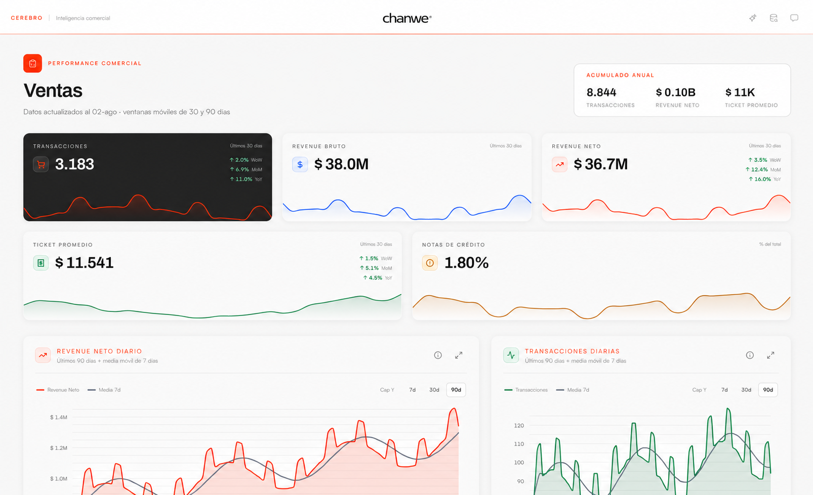

Economic context
Macro indicators with practical interpretation for your sector.
Cerebro is Chanwe's active monitoring service, designed for leaders who need context before the problem reaches their desk.

It is not a dashboard or a newsletter: it is an active, personalized reading of your business environment, with the frequency each decision requires.
We monitor indicators, filter noise, and return clear signals for focused decisions.
Cerebro is for leaders with tight agendas who make decisions with real impact. They get context without processing all the market noise.
It is not for everyone. It is for those who understand that context is part of strategy and act in time.
Macro indicators with practical interpretation for your sector.
Market changes before they become urgent.
Sector reading to anticipate, not react.
Cerebro is exclusive to Chanwe clients and selected subscribers.
Talk to the team